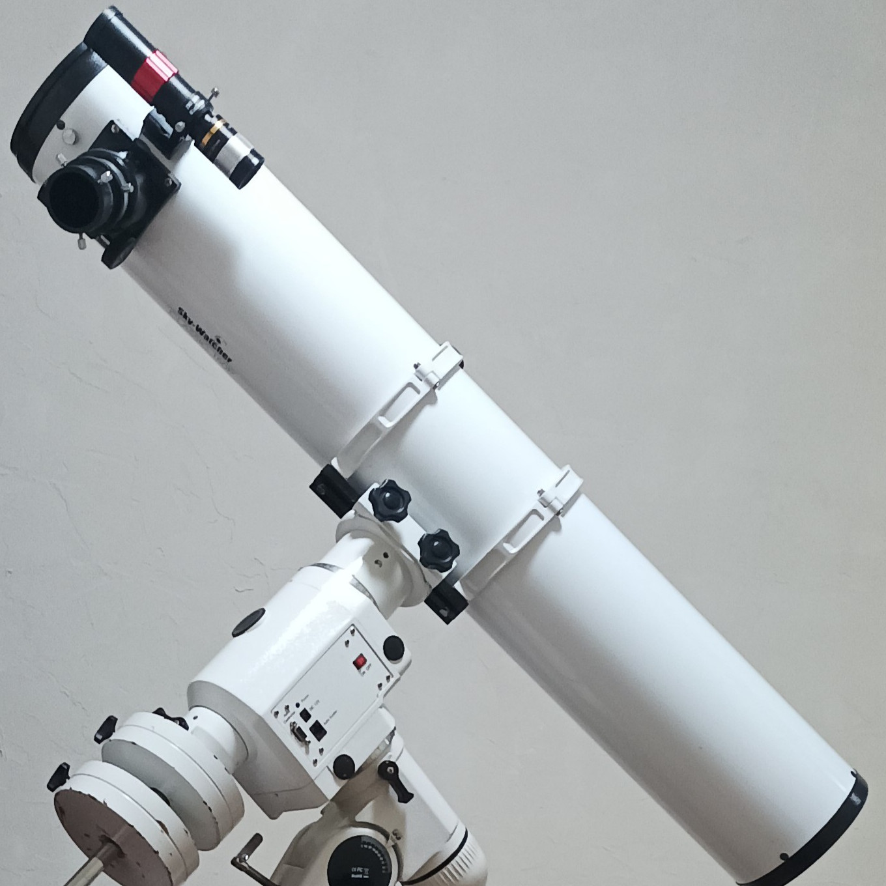
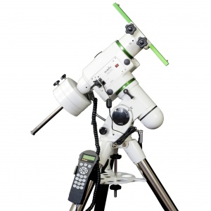
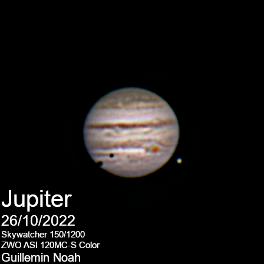

|
 |
Telescope Newton Skywatcher 150/1200
Still this good old dobson Skywatcher 150/1200, a good telescope with a good resolution for what I am doing.
It's doing the job very well and I don't think buying a new telescope is worth, because it's too expensive to buy a better one and I haven't used its full potential yet.
It has a resolving capacity of 0.77", a limit value (mag) of 12.7 and a light gathering capacity of 459. The tube weighs 5.8kgs alone, ~6.2kgs fully equipped.
It cost ~300€. I have few eyepieces, two good ones from my dobson Kepler 300/1500 and two other ones from the Skywatcher 150/1200.
|
|---|
|
 |
Mount Equatorial Skywatcher NEQ6 Pro
A very precise equatorial mount that I exchanged for my Kepler 300/1500. This equatorial mount track stars by compensating the Earth rotation so I can take photos with long
exposure, and so the imager captures more light. The payload capacity is 18 kgs and the total weight (with counterweight (2x5kgs), without telescope) is 33.5kgs. The resolution is 0.144 arc sec, the
positioning accuracy is up to 1 arc minute and the mount compensates the mechanicals errors. It featured an ST-4 Auto Guider Interface for auto guidance camera, my ASI 120MC-S Color is supposed to be one but
considering that it is my only good imager, I have to use it for taking photos and not auto guiding but I hope I will be able to use it for auto guidance when my Nikon D5200 is back.
|
|---|
|
|
Imagers ASI 120MC-S Color / Redmi note 10 5G
This astro camera is great, firstly meant to be used as an auto-guiding camera but I use it as an imager for my photos. It has a resolution of 1280*960 which is quite low but good enough, the pixel size is
3.75µm. I also used my phone, a Redmi note 10 5G, before using the ASI 120MC-S Color, and I still use it to take large pictures of the sky.
|
|---|
|
With a new mount to track the objects, I could take photos of deep sky, but I firstly used my phone because I thought that using the ASI 120MC-S Color would be inappropriate as it's
a camera made for auto-guiding and planetary. But considering the bad results (the Ring Nebula, M57, doesn't look very nice and the stars around are stretched), that was not the best idea.
|

So I changed for the ASI 120MC-S Color to take photos and the results were much better, there is still a lot of noise and I'm working on it, but this is my very first correct photo
of the deep sky, the Dumbbell Nebula (M27) looks much greater than my previous photos (but this is still very amateur).
|

The ASI 120MC-S Color was better at taking photos of planets, it could be better with a barlow but I don't have one, beacause pixels are the main limit of the photos.
Here the sharpest photo I have ever taken, the transfer of Europe and Ganymède in front of Jupiter.
|
|---|